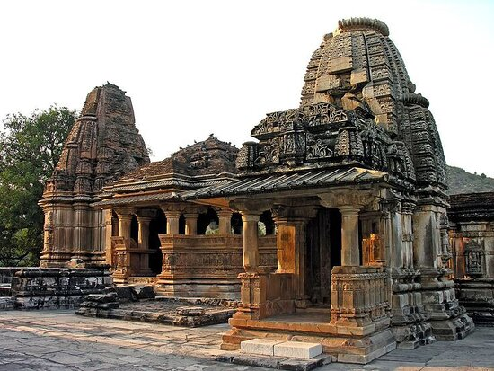
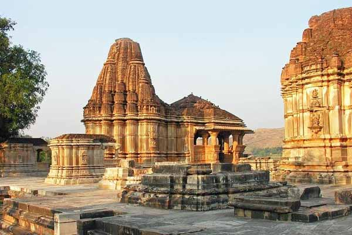

Nathdwara Temples


Nathdwara Temples
Nathdwara is a city in the Rajsamand district of the state of Rajasthan, India. It is located in the Aravalli hills,[2] on the banks of the Banas River and is 48 kilometres north-east of Udaipur.[3] Shrinathji, is a swarup of lord Krishna which resembles his 7-year-old "infant"[4] incarnation of Krishna.
The deity was originally worshiped at Jatpura, Mathura[5] and was shifted in the year 1672 from Govardhan hill, near Mathura along holy river Yamuna after being retained at Agra for almost six months. Literally, Nathdwara means 'Gateway to Shrinathji (God)'.
Nathdwara is a significant Vaishnavite shrine pertaining to the Pushti Marg or the Vallabh Sampradaya or the Shuddha Advaita founded by Vallabha Acharya, revered mainly by people of Gujarat and Rajasthan,[7] among others. Vitthal Nathji,[8] son of Vallabhacharya institutionalised the worship of Shrinathji at Nathdwara.
Today also the Royal king family of Nathdwara belongs to the lineage of vallabhacharya mahaprabhuji. They are called Tilkayat or tikaet of Nathdwara.
Daily Eight Darshan opens for devotees as per schedule by temple. Mangala, Shringar, Gwala, Rajbhog, Uthapan, Aarti, and Shayan.
Mobile phones, socks, and shoes are not allowed. There are lockers near the gate you can put your phone and shoes in.
Religion
Vallabha Sampradaya
The religion of the town of Nathdwara is centered on the Pushtimarg sect of Vaishnava Hinduism and primarlily the Shrinathji Temple.
Shrinathji Temple
Main article: Shrinathji Temple
The shrine at Nathdwara was built in the 17th century at the spot as exactly ordained by Shrinathji himself.[11] The idol of the Lord Krishna was being transferred from Vrindaban to protect it from the Mughal ruler Aurangzeb.
When the idol reached the spot at village Sihad or Sinhad, the wheels of bullock cart in which the idol was being transported sank axle-deep in mud and could not be moved any further. The accompanying priests realised that the particular place was the Lord's chosen spot and accordingly, a temple was built there under the rule and protection of the then Maharana Raj Singh of Mewar. Shrinathji Temple is also known as 'Haveli of Shrinathji' (mansion).
Naveet Priya and Madan Mohan Temples
The idol of Naveet Priya came to Nathdwara with Shrinathji and is the form of Krishna as a child. Madan Mohan was gifted to Shri Nathji by the wife of Maharana Fateh Singh of Udaipur and Mewar. These two temples are under the same administration as the Shrinathji Temple.
Vithal Nath Temple
The image of Vithal Nath is the second of the seven svarups of the Pushtimarg sect. Its administration is separate from that of the above temples.
Other
Other deities worshipped in temples in the town include Khera Mata, Mahadeva, Hanuman, Mataji (in various forms), and Thakurji (non-Vallabhite Vaishnava temples). There is also a small presence of Islam and Jainism.
Geography and Transport
Nathdwara is located at 24.93°N 73.82°E.[16] It has an average elevation of 584 metres (1919 ft). Located just 48 km north-east of Udaipur in Rajasthan, this town is easily reached by air, road or nearest rail-head.